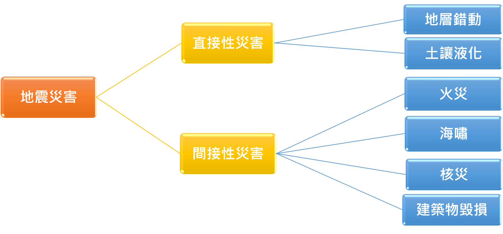
直接性災害
1.地層錯動
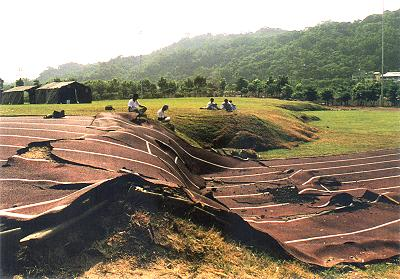
→當發生構造地震時，會造成地殼內的岩層產生變形，當岩層錯動位移過大，即有可能造成地面產生高低不一或前後不齊的地面斷層。
2.土壤液化
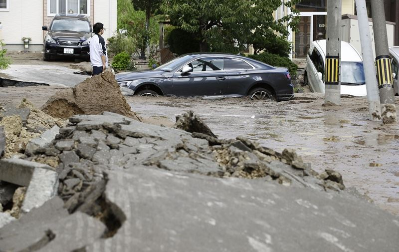
→砂質土壤在結合高地下水位的情況下，若遇到地震搖晃會導致砂質顆粒浮在水中的現象，而使砂質土壤失去承載建築物重量的力量。
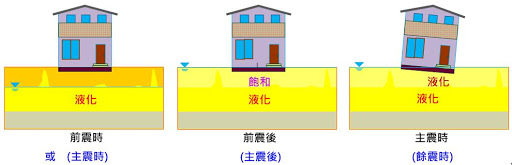
→土壤液化較容易出現在河川下游的沖積平原及砂質海岸。
間接性災害
1.火災意外
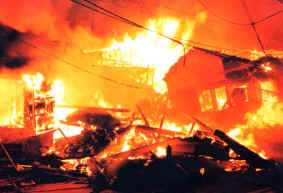
→規模較大的地震，可能造成建築物、橋梁、路面損毀，瓦斯管線可能因此斷裂，而引發火災。
2.海嘯
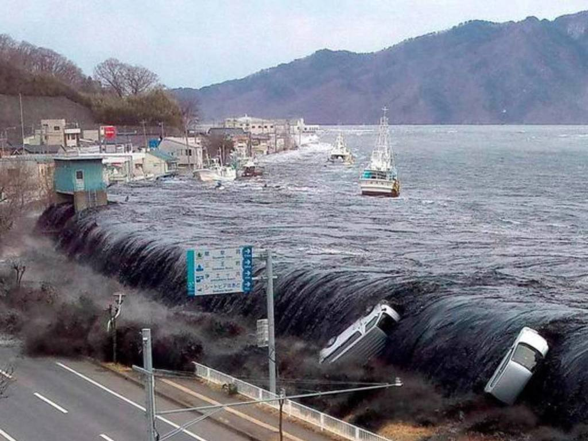
→海底發生地震時，可能會使海底地形產生變化，引起水體擾動產生波長大又深的海嘯並往岸邊襲擊。
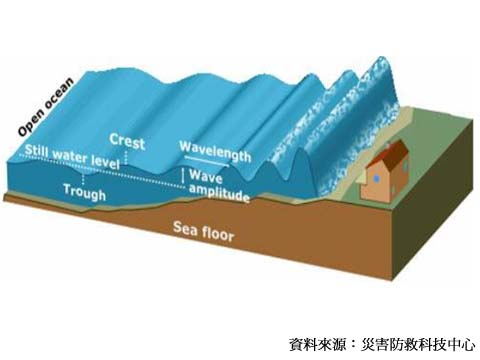
→海嘯來臨前會看到海邊的海水急速往海中回捲，看到此景象時即要注意海嘯在幾秒鐘內即將抵達。
3.核災
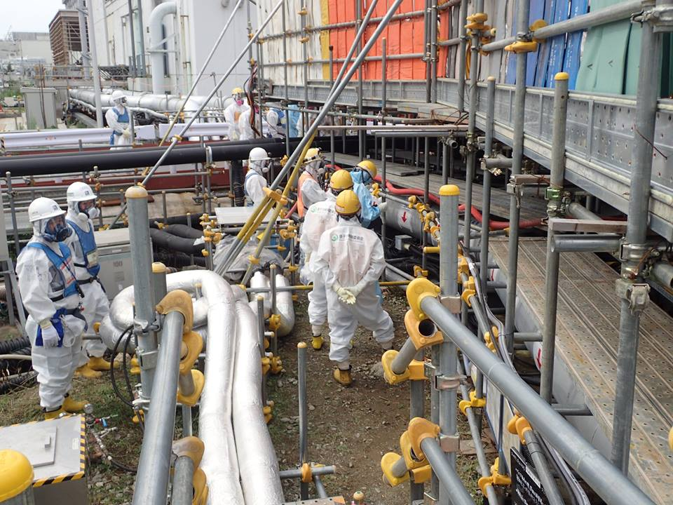
→地震發生後若出現停電、海嘯等情況，核電廠極有可能因失去電力及受外力因素影響而無法正常運作，燃料不斷產生衰變熱，長時間缺乏冷卻，就會過熱而導致嚴重事故(爆炸)。
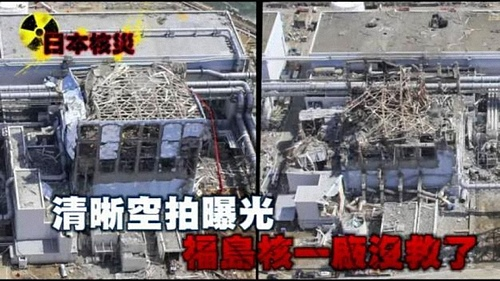
→核災的發生通常都會因許多情況同時發生而導致，目前為止最嚴重的一次是日本311大地震引起的核災事故。
3.建築物毀損
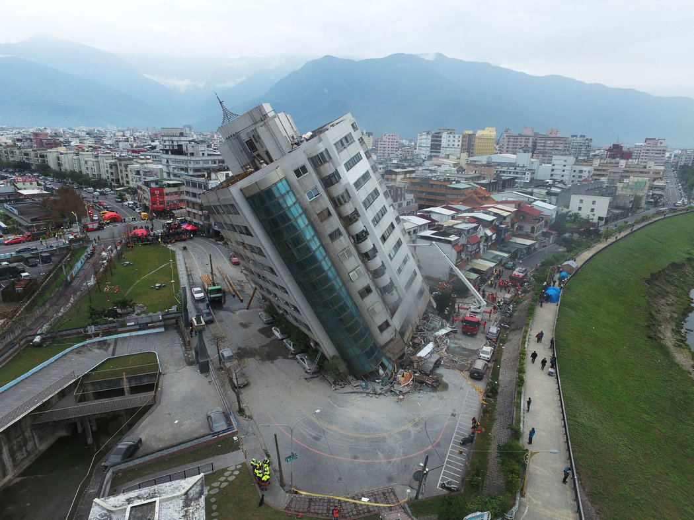
→地震後可能會發生建築物毀損、倒塌的事故，多數是因為建築物在建蓋時的架構、建材不具耐震效果，或是因為屋齡過久，致使架構脆弱而崩塌。
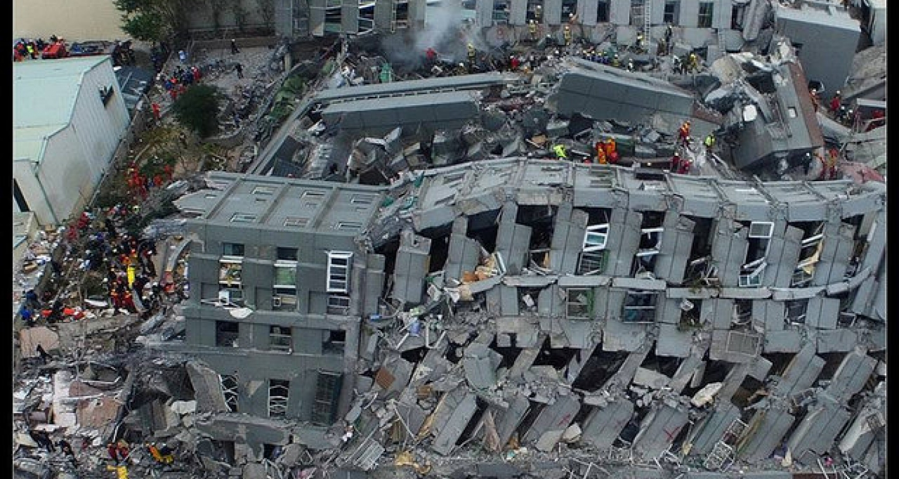
→台灣許多大樓皆有頭重腳輕、軟腳蝦建築的結構問題
→台灣因地震而導致嚴重的建築屋倒塌事件有0206美濃大地震與花蓮大地震